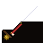
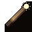

iron

sword_gryff

wand1 (saule)

wand2 (sureau)
Le calque tint-mask reçoit la couleur via background-color: var(--tint-color).
Le calque tint-overlay superpose les détails fixes (garde, pointe magique…).
Limite Chromium : nécessite HTTP (file:// rend des masks vides).

